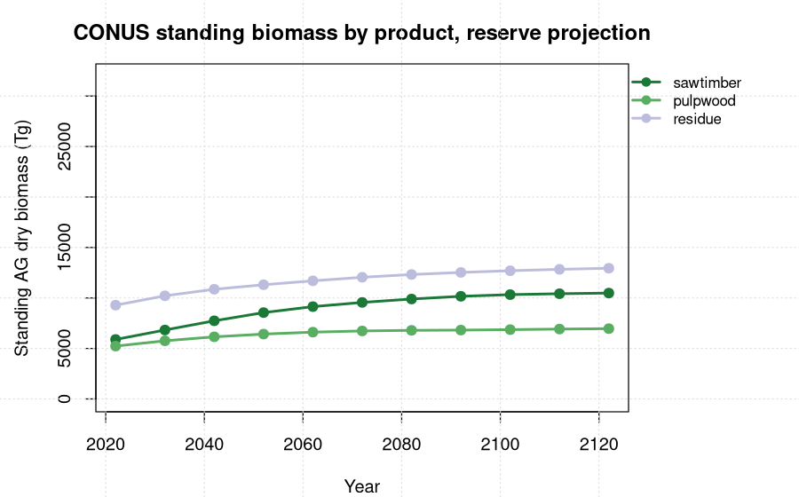

Three additions to the CONUS yield-curve engine: a hybrid growth form that is asymptotic up to a forest-type x ecoregion breakpoint and declines beyond it, a sawtimber / pulpwood / residue product allocation, and a comparison of FIADB versus TreeMap area expansion. All fit from FIA tree data (FIADB first), with TreeMap as the spatial expansion layer.
Across all 48 states, Chapman-Richards fits the FIA chronosequence best (pooled 5-fold CV RMSE 23,420 vs the current peak-decline form 27,480). The recommended production form is the hybrid: Chapman-Richards up to an empirical culmination breakpoint A* (per forest type x ecoregion), then a decline tail. It equals CR where A* is beyond the data and adds senescence where forests culminate earlier (and beats CR outright in cases like Idaho, A* = 115). Yield is allocated into sawtimber / pulpwood / residue; the CONUS standing sawtimber share rises from 29% to 35% over a 100-year reserve as stands mature. FIADB and TreeMap expansion agree at the national scale (t0 ratio 0.94) but diverge sharply for states without an FIA carbon anchor, so TreeMap pixel-area expansion is the more defensible CONUS-wide basis.
The engine currently uses the peak-decline form b1*age^b2*b3^age.
A 5-fold CV stress test of four candidate forms on the FIA chronosequence (AG
carbon, lb/ac), pooled across all 48 states:
| Form | Pooled CV RMSE |
|---|---|
Chapman-Richards A(1-exp(-k·age))^p | 23,420 |
| Hybrid: CR x decline tail beyond A* | 26,419 |
| Peak-decline (current engine) | 27,480 |
| Re-anchored peak-decline (peak fixed at A*) | 27,774 |
Chapman-Richards wins because, in the FIA chronosequence, AG carbon in most
northern forests does not decline before roughly 200 years. The empirical
culmination age A* hits that ceiling for ME and MN, where the hybrid reduces to
CR; where forests culminate earlier the decline engages and can beat CR (GA
A* = 125, IN 155, WA 175, ID 115). The hybrid is the right production form
because it is CR-equivalent where the data show no decline and never worse by
construction, while adding real senescence where the chronosequence supports
it. Breakpoints are the empirical culmination per forest-type x ecoregion cell,
with forest-type then state fallback (ycx_hybrid_modelform.R).
ycx_products.R splits standing volume and biomass into sawtimber,
pulpwood, and residue (softwood and hardwood tracked separately) using FIA size
thresholds (softwood sawtimber DBH >= 9 in, hardwood >= 11 in; poletimber 5 in
to threshold) and FIA volume partitions (VOLCSNET sawlog, VOLCFNET merch,
DRYBIO_SAWLOG / BOLE / AG). Fractions are computed per cell and per age class
(<40, 40-80, 80+ yr) so allocation tracks the sawtimber shift as stands
mature. ycx_treemap_products.R then applies those fractions to the
spatially explicit TreeMap AG-biomass projection.

| Product | 2022 (Tg) | 2122 (Tg) | share 2022 | share 2122 |
|---|---|---|---|---|
| sawtimber | 5,889 | 10,484 | 0.29 | 0.35 |
| pulpwood | 5,233 | 6,960 | 0.26 | 0.23 |
| residue | 9,286 | 12,945 | 0.46 | 0.43 |
The standing sawtimber share rises from 29% to 35% as forests age, the maturation
signal the age-class fractions are designed to carry. This run uses the current
production biomass curves (peak-decline) so it is consistent with the live
agb_dry engine; rewiring to the hybrid form is a separate step.
The same curves expanded two ways for AG live carbon (reserve): the uniform-grid FIADB model (area = n_plots x A0, A0 anchored to FIA carbon totals) and the spatially explicit TreeMap pixel-area model. CONUS totals: FIADB 11,002 -> 17,544 Tg C; TreeMap 10,352 -> 14,813 Tg C; national t0 ratio TreeMap/FIADB 0.94. The two agree closely for FIA-anchored states but diverge sharply elsewhere (MI 0.39, WI 0.55), because the uniform-grid model falls back to a median area-per-plot where no anchor exists while TreeMap uses real pixel area everywhere.
TreeMap pixel-area expansion is the more defensible CONUS-wide basis; the FIADB uniform-grid line should be read as reliable only for the anchored states. This is also why the production data treats TreeMap as the spatial layer over the FIA-fit curves.
🧮 yield_curve_engine scripts 📋 results writeup
PERSEUS is the multi-model forest carbon intercomparison framework at the Center for Research on Sustainable Forests (CRSF), University of Maine. Computation on the Ohio Supercomputer Center Cardinal cluster (PUOM0008). Curves and product fractions are fit from FIA tree data; TreeMap 2022 is USFS RDS-2025-0032.